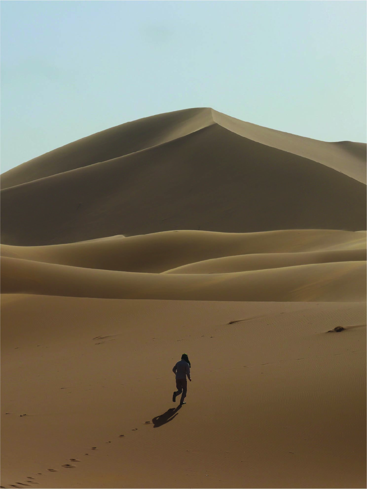

Hi! My name is Tom Williams (He/Him/His)
My interest in Earth Science stems from my love of the outdoors, where I am often found running, hiking, cycling, and skiing. This passion took me to Oxford University, where I graduated with an MEarthSci in Earth Sciences in 2020. Seeking to understand more about the role of magmatic processes in shaping our environment, I am now a PhD candidate in the Department of Earth, Environmental, and Planetary Sciences at Brown University, where I am co-advised by Alberto Saal and Stephen Parman.
Outside of the outdoors, I enjoy exploring events and classes to develop as many random skills as I can, including glass blowing, truffle hunting, micro-welding, ceramic wheel throwing, and jewelery making! These even sometimes come in handy when maintaining lab equipment.


